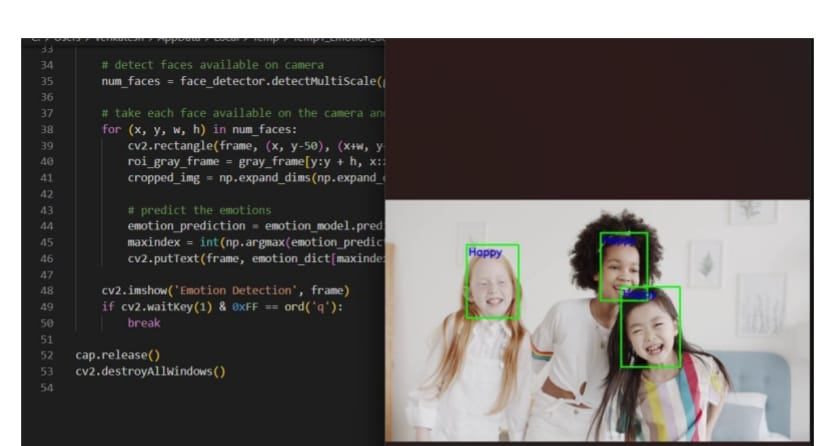
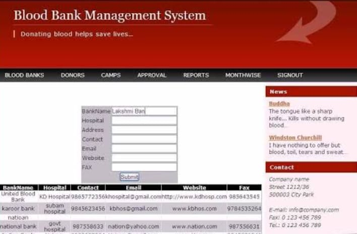

Face analysis using machine learning

An emotion can be identified by various activities of a person. A human can express their
feelings or emotions in different ways into like happy, disgust, anger and so on. Emotions
can be detected or identified in variety of ways. Emotion can be recognized by body gestures,
EEG signals, face images , text and so on. A survey or review is made on identifying the
human emotions using EEG signals with help of machine learning techniques . in this
project, a review is done to find the best algorithms for finding an emotion of a person by
analyzing various machine learning and deep learning algorithms with the help of dataset.
Automatic emotion recognition based on facial expression is an interesting research field,
which has presented and applied in several areassuch assafety, health and in human machine
interfaces
Blood banking system

A blood banking system is an integral part of modern healthcare, ensuring the availability of safe and compatible blood and blood products for transfusion. This system encompasses several critical processes including the collection, testing, processing, storage, and distribution of blood.
Collection involves recruiting donors and safely drawing blood, either whole blood or specific components like plasma and platelets. Testing is conducted to screen for infectious diseases and determine the blood type, ensuring that only safe and compatible blood is used. Processing involves separating whole blood into its constituent components, such as red blood cells, plasma, and platelets, which can then be stored and used as needed. Storage employs stringent conditions to preserve the viability and functionality of blood products until they are required. Finally, distribution ensures that blood products are delivered efficiently to healthcare facilities for transfusion to patients.